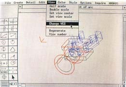
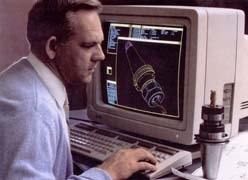
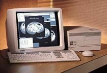
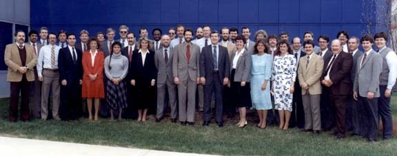
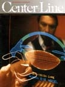
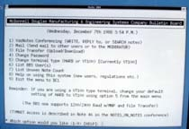
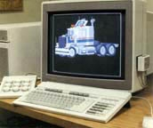
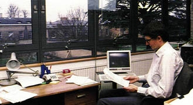
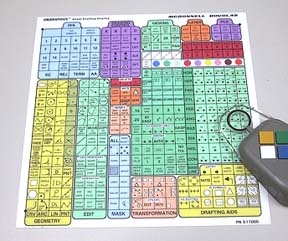
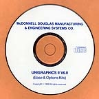

Unigraphics in the 80's 1986-1989
February, 1986:
The 10th Annual Unigraphics Users Meeting was held at the Hyatt Regency Hotel in Long Beach, CA. What a difference a year makes. The primary topic of this meeting was almost exclusively Unigraphics II with presentations from both customers and MISCO people. Topics covered was the upcoming version of Unigraphics II (V4.0) and new hardware, both CPU's and design stations. Also announced at this meeting was the fact that UniAPT was being moved to an unsupported status and that all maintenance fee's would be dropped to zero and that support would be very limited in the future (however, for at least the next decade or so, the Cypress technical support groups were helping people with UniAPT issues, even if it was all "unofficial"). Another topic discussed was the future requirements in the area of data management. Unigraphics II introduced the UGFM system which no sooner was it in place then it was seen as being unneeded. Standard file management systems were now all based on files & folders and there was no real need for a separate system from the native system. While it would be a couple of years before native file management was offered, this discussion laid the groundwork for both that effort and the larger needs of organizations that would lead to PDM systems of the future.March, 1986:
Version 3.1 of Unigraphics II is released. This is a maintenance only release.MISCO announces Unigraphics II ACCESS-50. This was a low cost seat of Unigraphics II that you installed on a central CPU but which you "accessed" (hence the name) from an IBM PC where there had been loaded software which emulates a Unigraphics II design station. This allowed a company to use lower cost PC hardware and still get most of the capabilities of a full seat of Unigraphics. Note that this was before the advent of MS-Windows and so this product included the GEM DESKTOP window system which allowed separate windows for graphics and the message monitor (note that this product actually benefited from some of the work that was being done at PC Productivity since they also chose to use the GEM DESKTOP window system). Later there was also an Apple Macintosh based version named ACCESS-150. Of course this version did not require any "desktop" emulator since the Mac already provided that environment.
May, 1986:
MISCO announces the availability of the new D-135 design station as a replacement to the D-125C/CE. It was offered in only one configuration (hence the dropping of the "C" or "CE" designation) and provided improved graphics resolution, better overall performance due to the fact that it used a 19.2KB serial interface (until now all design stations, with the exception of the IBM 5080, were interfaced using a 9.6KB serial interface) and expanded graphics memory (1MB versus 192KB). This last feature was not enabled until the release of Unigraphics II Version 3.2 and until then operated basically as a D-125. Note that the D-135 was the last significant piece of hardware to carry a label with the Unigraphics name. From this point forward, all CPU's, displays and workstations were to carry the vendors name and and were sold with no modifications of any sort (the exception being the addition of an add-on PFK and in some cases, a separate message monitor).June, 1986:
PC Productivity Systems releases their first (and only) product, Crossroads (Page 1 Page 2). This was basically a PC version of Unigraphics I which provided the first full function 3D CAD/CAM system ever to be made available on an IBM PC. It used the GEM DESKTOP window system since MS-Windows had not yet been invented. Crossroads was many years ahead of its time, even to the point of implementing an Object Action based UI (User Interface), something that would not get introduced in Unigraphics until V16.0. Crossroads provided full 3D wireframe and surface modeling, drafting and mass properties (NC toolpath generation was to come later as an add on module). Since the part file data structure was identical to Unigraphics I, users could easily move files from Crossroads to Unigraphics II if they wished to. While the introduction of Crossroads caused a certain amount of excitement in the industry it never really took off. While the price of the software itself was was very reasonable at $2995 per seat (and this included the GEM software), it did require extensive upgrading to the PC including adding additional memory, a graphics card, a math-coproccesor and a large (in those days) 20mb hard drive (back then adding these items could easily double or triple the original cost of a basic PC). Crossroads was only on the market for about 3 years and while it can not be considered a commercial success, it did provide a preview of things to come (look at the picture of the display screen with its menu bar, pull down menu and "icons" to see how close it came to what we are all familiar with today) and many people continued to use the software for some time as it was truly the only 3D design system available on a PC for many years.July, 1986:
Version 3.2 of Unigraphics II is released. In addition to maintenance there were several enhancements, most of which had to do with supporting new hardware configurations. These enhancements included:The DEC VaxStation II/GPX was the first true workstation that was supported by Unigraphics (granted the ADS-100/A-100 was sold as a standalone unit and while it was sometimes referred to as a "workstation" it was really a traditional CPU, graphics monitor, message monitor, disk drive and archive storage all packaged into a single piece of furniture and sold as a dedicated unit). With the advent of these new workstations, the first thing that was dropped was the message monitor in favor of having the various pieces of data included in sub windows displayed on the main graphics screen. Note that while users could now select, using function keys and the numerical keypad, functions shown on a graphical PFK displayed on the main screen, many companies continued to purchase add-on optional PFK's from Unigraphics (some of the hardware vendors also sold optional PFK's of their own). To see what a VaxStation screen layout looked like, see the picture on the right.
- New display architecture (needed because of the advent of "workstations).
- Support for the DEC VaxStation II/GPX the first true Unigraphics "workstation"
- Support for the full capabilities of the D-135 design station
- Support for the Tektronix D41XX terminal
August, 1986:
The 1st Annual Japanese Unigraphics Users Meeting was held in Tokyo, Japan. The meeting was hosted by Seiko Instruments & Electronics. There were 38 users in attendance from 27 different companies.September, 1986:
The 4th Annual Special Interest Groups Meeting (this is the new name for the fall meeting) was held in Boston and was again sponsored by DEC.November, 1986:
Unigraphics II Version 4.0 is released. This was one of the most significant versions of Unigraphics II since the initial release in terms of new capabilities. Included in this release where things like:
- Assemblies & Components
- Parts List
- Machine Elements
- Interleaf interface
- Trimmed Surfaces (this was especially helpful when transferring models from UniSolids)
- Macro Tablets
- Major enhancements to GFEM and NC
January, 1987:
The MDC division responsible for Unigraphics gets a new name, the McDonnell Douglas Manufacturing and Engineering Systems Company. John Clancy was named president of the M&E division.M&E (this is how the Unigraphics organization was generally referred to) announced that they would no long sell Data General hardware and that while they would still offer DG versions of Unigraphics II and UniSolids on an un-bundled basis, that this was only going to be for a limited time, probably not past the end of 1988.
February, 1987:
The 11th Annual Unigraphics Users Meeting was held at the Anaheim Hilton & Towers in Anaheim, CA. The number one topic at the meeting was the announcement to drop Data General as a hardware vendor and the impending loss of support for Unigraphics users on DG hardware. This was such a big issue that the Unigraphics management was forced to make a commitment to continue full support of not only Unigraphics II, but also UniSolids and UniPCB. DG users would get enhancement releases for 5 years and full maintenance and support for 6 years. The only exception to this would be if a product was completely discontinued earlier than that (which is what happened, first with UniPCB and then with UniSolids). The agreement however did not guarantee that all new products or modules would be covered by this agreement, which was a continuous point of contention throughout the life of the agreement.Also announced at this meeting was the plans by M&E to add a license management system to Unigraphics II. This system, called the Access Control System (ACS) was to be introduced over time starting with Unigraphics II V4.1 where the Design/Drafting module would be managed and where additional products and modules would be added in later releases. This meant that all users would have to convert to per seat pricing and maintenance. Up until this time software was sold using several different schemes. On mainframes with multiple stations attached, Unigraphics was broken down into "Large" and "Medium" system prices, based on the maximum number of terminals that could be hooked up and run at any one time, irrespective of whether there were actually that many present or not. On workstations and single display systems, the software was sold on a per seat basis, but there was no real way to stop a customer from running additional stations as a remote terminal. With the ACS scheme, really brought about because of things like VaxClusters running several VaxStations from a common server, each system would need to check-out a license before a module would be made available to a logged in user. While it did force some additional complexity for the customers, it did provide them with additional flexibility, and based on a very liberal grand-fathering plan, provided most of our users with many more seats of Unigraphics than they really needed and allowed them to either drop seats, which in many cases meant that they could reduce their monthly maintenance cost, or to delay the purchase of additional software due to the fact that they already had additional "licenses in the bank". This situation was on the mind of the Unigraphics people when years later there was the need to grand-father customers from V9.0 to V10.0.
March, 1987:

Version 4.1 of Unigraphics II is released. In addition to the introduction of the ACS system there were a large number of PR's addressed. Version 4.1 also supported the newly released DEC VaxStation 2000. This was a very compact unit and also was one of the first true desktop systems (note that the CPU, being housed in a case about the size of a large lunch box and having a fold away handle, made it very easy to carry and popular as a portable demo unit). The initial units were only available with a black & white display, but was soon followed by a color version. A typical VaxStation 2000 configuration is shown at the right.April, 1987:
During April the GM/EDS C4 LTD (Live Test and Demonstration) was performed in St. Louis, MO. This was basically a 2 day benchmark that reviewed virtually all of the capabilities of Unigraphics and all of it's modules. During the 2 days individual teams, made up of M&E, GM and EDS personnel, conducted approximately 50 different tasks. All of the major CAD/CAM vendors of the day participated in their own LTD's during this period. Based on this and other evaluations, the GM/EDS team intended to select a single "Strategic Partner" that would eventually provide GM with a single CAD/CAM system for their worldwide operations. Note that at the time of this evaluation, GM was using in production CAD software from 15 different vendors (including their own in-house developed CGS system), interestingly enough, Unigraphics was not one of the 15 (however, there were several significant installations of M&E's Robotic software installed at various GM production facilities). Pictured below is the team from M&E that participated in the 2 day LTD. June, 1987:

M&E publishes Volume 1, Number 1 of its new marketing magazine "CenterLine". This magazine, published on a regular basis, was intended to provide an opportunity to showcase the many successes that Unigraphics customers were having using the various products from M&E. The first issue included, along with an editorial from M&E President John Clancy, articles about Jacobsen (commercial lawn mowers), 3M (intraocular lenses), Oster (personal grooming), VME (excavating equipment), King Radio Corp. (flight instrumentation) and Hunt Machine & Manufacturing (mold tooling). There was also an interview with engineering personnel from the McDonnell Aircraft division of MDC about their utilization of CIM (Computer Integrated Manufacturing). If you would like to review other issues of the "CenterLine" magazine, please go to the Unigraphics "Archives".August, 1987:
John Clancy retires from McDonnell Douglas and John Mazzola (shown at right) is appointed the new Executive Vice President of the Manufacturing & Engineering Systems Co. reporting to Jeremy Causley, Group Executive Officer, McDonnell Douglas Information Systems Group.
August also marked the launch of the Unigraphics BBS. This was probably the first BBS in the CAD industry. The open and uncensored (there were a few basic rules) nature of the Unigraphics BBS provided a forum for sharing ideas as well as creating a self help environment that is still being used today by users from all parts of the world. It also provided a means for direct communication between, not only the community of Unigraphics users, but also with the people working in the Unigraphics organization. For Unigraphics employees it is like meeting every day with their customers and being able to answer questions, help clarify concepts and on occasion, even ask the questions themselves to help them understand the issues and requirements of today's users in near realtime.September, 1987:
The 5th Annual Special Interest Groups Meeting was held in Cambridge, MA with over 300 people in attendance representing over 60 companies.October, 1987:
Unigraphics II Version 5.0 is released. Included in this release are new CAM modules which offer improved associatively. This release was also the first version of Unigraphics that supported NURB (Non-Uniform Rational B-spline) surfaces (b-surface). This was now the new standard mathematical form for complex geometry. Note that while the older parametric-cubic surface (AKA, "Gordon surface") were still fully supported, the new NURB form would eventually replace them.December, 1987:
Version 5.1 of Unigraphics II is released. This is primarily a maintenance release with several improvements in the Graphics Schematics Module (GSM).February, 1988:
The 12th Annual Unigraphics Users Meeting was held in Anaheim, CA. Over 550 people were in attendance. The highlight of the meeting was the introduction of Unigraphics support for the UNIX operating system. It was also announced at this meeting that Unigraphics was in the process of putting in place a single centralized customer support center that would provide direct phone support to all customers in the US and Canada. This would become known as the Technical Access Center (TAC).March, 1988:

M&E formally rolls out Unigraphics running on UNIX workstations at both the NDE (National Design Engineering) Show in Chicago, IL and the NCGA (National Computer Graphics Association) Show in Anaheim, CA. The first UNIX workstations supported were the 300 series from Hewlett-Packard (shown at the right). Note that these workstations supported full 3D rotation of the
display using the optional dial box.On March 17th, St. Patrick's Day (which turned out to be somewhat significant), there was a meeting in Cypress attended by key Development and Marketing personnel that would prove to be one of the most important gatherings in the history of the company. It was at this meeting that a proposal was discussed about the need to produce a totally new product to replace Unigraphics. By this time it was generally acknowledged that a solid geometry based CAD system was highly desirable (remember this was before the acquisition of Shape Data) and that the company should begin to explore what it would take to accomplish that. Based on previous history, most people who walked into this meeting assumed that what we were really talking about was something that could be called UGIII however that did not sit well with the head of development, Bob Loss. It seems Bob had a strong aversion to naming this future product UGIII (you see at that time there was this feeling that products which carried a designation of "3" never quite turned out as well number "2" did, for example, look at how well the Apple III did). Anyway, Bob refused to let anyone use the word UGIII during the meeting since he was convinced that if we left the meeting with that name on our lips, that we would never be able to stop using it. So in order to avoid saying that "name" during the discussions that took place, the participants resorted to the use of a nonsense word, in this case "Kleenex Box" (there was one sitting in the middle of the conference room table) whenever they needed to say the "name" of the proposed new product. Well just before the meeting broke up someone commented that since it was St. Patrick's Day that maybe we could use that as inspiration. So this is how the "Shamrock Project" got its name.
Note however that while the Shamrock Project was originally intended to result in a totally new product, many factors became apparent over time which forced the company to slowly modify that vision to one where it was decided rather then pursuing a "revolutionary" process, that it would be more of a "radical evolution" of the existing Unigraphics II product. So while the original vision of that meeting was never realized, it started a series of events and activities that eventually lead to the development of Unigraphics V10.0. Remember that many forces were to come to play over the next several years, including the changing fortunes of McDonnell Douglas, the acquisition of Shape Data Ltd and the technology, as well as the ideas and vision of their people, that was now available, winning the GM business and the impact that their requirements suddenly had on the long term plans and then all of this coming to together with the sale of the Unigraphics organization to EDS in 1991. So in the end the impact of this meeting was akin to the proverbial stone dropped into the pond that started a ripple that eventually became a tidal wave.
However, there was one rather interesting legacy from that St. Patrick's Day meeting back in 1988. When the V10 project finally got into full swing, it was decided that as part of the marketing effort to position this product in the marketplace, that there would no longer be any use of the designation "Unigraphics II" in any company publication or marketing collateral.
June, 1988:
M&E releases Version 5.2 of Unigraphics II. The primary purpose of this release was to provide support for the HP300 series of UNIX workstations.September, 1988:
The 6th Annual Special Interest Groups Meeting was held in Cambridge, MA.November, 1988:

M&E completes the acquisition of Shape Data Ltd of Cambridge, UK. Shape Data was acquired from the Evans & Sutherland company and had been in business developing solid modeling software since 1974. The initial product released by Shape Data was Romulus in 1975. This was the first kernel solid modeler ever developed and was the forerunner to Parasolid. Shape Data also had marketed a commercial CAD system based on the Romulus kernel named Romulus-D. Shape Data's offices are located adjacent to historic Cambridge University and many of the employees are graduates of the university. The primary motivation for the acquisition was to gain access to Parasolid, a modern high performance B-rep solid modeling kernel. The decision to go the acquisition route was made after it became obvious that it was going to be impractical to adapt the C-rep PADL2 modeler (which UniSolids was based on) as the primary modeling core for the new product being proposed as part of the Shamrock Project.December, 1988:
Version 6.0 of Unigraphics II is released. This was a very significant release as there were many new capabilities including: Perhaps the most significant aspect of Version 6.0 was the introduction of UG Detail Drafting. This was a lower cost version of Unigraphics aimed at those users who's primary task was creating engineering drawings, The idea was to have a simple-to-use drafting oriented version of Unigraphics packaged with additional features, such as a tablet interface (shown above) along with pre-programmed macros and GRIP programs that improved the productivity of creating drawings. While the core of the product was basically the same as standard Unigraphics, UGDD was sold without any add-on modules so things such as CAM and Surface Modeling was not available. This was a very successful product and many hundreds of copies were sold and was available as a fully supported product until the introduction of V10.0 when Unigraphics was restructured so that Drafting could be sold separate from Modeling and other modules.
- Hidden-Line-Removal (curve hiding curve)
- NURB curves (B-splines)
- Curvature analysis for curves and surfaces
- Deviation checking
- UG Detail Drafting (UGDD)
- Sheet Metal applications
- Cavity Milling
February, 1989

The 13th Annual International Unigraphics Users Meeting was held in Long Beach, CA. There were over 560 attendees including people from 7 European and Asian countries making this the most "international" meeting yet. Highlights of the meeting included an early look at the Parasolid based integrated solid modeling functionality that would be delivered with Version 7.0. Also at this meeting it was announced that starting with Version 6.0, customers would now have the option to receive Unigraphics on CD-ROM rather then magnetic tape (which was still the primary distribution media). 200 CD's for DEC VAX versions of V6.0 were produced at the last minute and handed out as sort of "souvenirs" to attendees (these CD's were ordered without even getting a test copy first, but the feeling was that it really didn't make any difference whether they worked or not since this exercise was seen by many as a gimmick, however it turned out that they worked just fine). There was also an announcement made that while paper based documents was still the only option available, that there were plans to switch over to CD-ROM based documentation sometime in the near future. Users were also encouraged to start upgrading their systems with CD-ROM drives and suggested that any new installations include at least one network accessible CD-ROM drive.March, 1989
Version 6.0 of Unigraphics II is released on Apollo UNIX workstations.September, 1989
The 7th Annual Special Interest Group meeting was held in Cambridge, MA with over 300 people in attendance from 79 companies. This was to be the last of these meetings to be sponsored by DEC. While the meetings would continue to be held in the fall and on the East coast it was decided that the national user group would take over responsibility although DEC assured the executive committee that they would continue to provide what support that they could. However, the national group intended to change the format and that plans were already being formulated for the 1990 fall meeting. It was also announced at this meeting that all TAC phone lines were going to be consolidated into a single 800 number that would allow toll free access for all customers in the US and Canada.October, 1989
Version 6.0 of Unigraphics II is released on Sun UNIX workstations.November, 1989
The new single access number for the TAC center goes on-line. The new number, 1-800-955-0000, is still the main access number for today's GTAC (Global Technical Access Center).December, 1989
Version 7.0 of Unigraphics II is released. The most significant aspect of this release was the introduction of UG/Solids. This was a new module based on the Parasolid kernel modeler and was fully integrated into Unigraphics. Solid models created in UG/Solids could be added to a drawing and dimensioned the same as wireframe models. Also solids models could be machined using the normal CAM modules . Note that UG/Solids did not support parametric editing nor was there a sketcher, but models could be created by extruding/revolving a profile of curves. While UG /Solids was a new and extra cost module it was provided as a free upgrade to all UniSolid customers and there was a stand-alone program provided that could read the model graph of a UniSolids model and creates the equivalent Parasolid model in Unigraphics.Return to Lobby
{kind=link}
{kind=link}